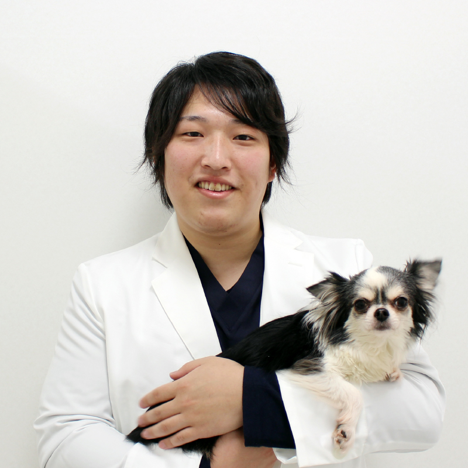

柏の葉動物医療センターは、千葉県柏市にある柏の葉T-SITE施設内の動物病院です。
来院する動物たちを自分のペットや家族と同様に考え、
心を込めた質の高い動物医療を提供し
飼い主様に安心してご来院頂ける動物病院として地域の動物医療に貢献してまいります。
当院の特徴
総合診療
全ての診療科目を幅広く診療する総合診療を行っています。予防診療から高度医療まであらゆる医療を提供しています。
医療連携
各種専門機関と連携し、適切な医療を提供します。救急診療、高度医療は24時間カルテを共有し、流山市にあるグループ病院で対応させていただきます。
ペットフレンドリーな環境
トリミングサロン、ペットホテルを併設。
病院がある柏の葉T-SITEはドッグガーデン、ペットグッズショップなどが入っているペットフレンドリー施設で、定期的にペットイベントも行われています。
ご挨拶
当院は柏の葉T-SITE施設内にあり、気軽に立ち寄り相談しやすい動物病院です。ワンちゃんネコちゃん達にも人間同様様々な病気があります。当院では予防医療から様々な外科・内科疾患まで広く対応し、確実に診断していくことを目指していきます。その上で最新の知見や研究結果を取り入れつつ、ご家族の状態に合わせた治療を提案させていただきます。ご家族に寄り添い、心のこもった動物医療を提供することを大事にしていきます。
また当院では循環器疾患にも力を入れており、セカンドオピニオン等にも対応しております。さらに高度な疾患や難治外科症例等は、本院と協力提携して治療に当たる体制が整っており、地域医療の貢献のための環境を整えております。
院長 大野拓也
